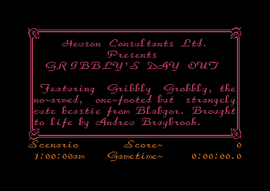
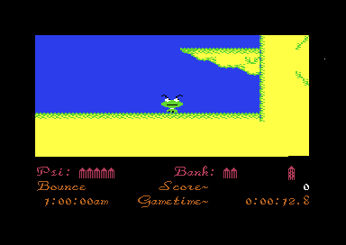

<meta charset="utf-8">
<meta name="viewport" content="width=device-width, initial-scale=1">
<title>Gribbly's Day Out</title>
<link rel="preconnect" href="https://fonts.googleapis.com">
<link rel="stylesheet" href="https://fonts.googleapis.com/css2?family=Lato:wght@400;700;900&family=IBM+Plex+Mono:wght@400;500&display=swap">
<style>
:root{
  --bg:#23262d; --paper:#e9e7e1; --surface:#ffffff; --surface-2:#f1efea; --line:#d5d3cc; --line-soft:#e0ded8;
  --ink:#2f3136; --ink-soft:#55585f; --ink-mute:#80838a;
  --link:#1f5fa8; --link-hover:#154480; --accent:#1f5fa8;
  --amber:#c25a00; --cyan:#1f5fa8; --coral:#d04a3a; --green:#2a8a4a; --violet:#4a5bd6; --hl:#fff0c2;
  --chip:#2f3136; --chip-ink:#ffffff;
  --c64blue:#40318d; --c64grey:#686868;
  --fd:'Lato',system-ui,sans-serif; --fb:'Lato',system-ui,sans-serif; --fm:'IBM Plex Mono',ui-monospace,Menlo,monospace;
  --col:1080px; --gx:68px; --fs:17px; --lh:1.6; --hw:900; --h1:46px; --h2:26px; --sy:48px; --pp:26px; --r:10px;
  --plate-shadow:0 1px 2px rgba(0,0,0,.05),0 4px 14px rgba(0,0,0,.05);
}
*{box-sizing:border-box}
html{background:var(--bg);min-height:100%}
body{background:var(--paper);color:var(--ink);font-family:var(--fb);font-size:var(--fs);line-height:var(--lh);max-width:var(--col);margin:0 auto;min-height:100vh;padding:0 0 4rem}
h1,h2,h3{font-weight:var(--hw);letter-spacing:-.01em;text-wrap:balance;color:var(--ink);margin:0}
.wrap{padding:0 var(--gx)}
.hero{padding:48px var(--gx) 8px;text-align:left}
.eyebrow{font-family:var(--fm);font-size:12px;letter-spacing:.08em;text-transform:uppercase;color:var(--ink-mute);margin:0 0 10px}
.hero h1{font-size:var(--h1);line-height:1.15;letter-spacing:-.02em;margin:0 0 14px}
.hero .sub{margin:0 0 .6em;color:var(--ink-soft)}
section{padding:var(--sy) 0 24px}
section:last-of-type{border-bottom:none}
.fig{font-family:var(--fm);font-size:12px;letter-spacing:.08em;text-transform:uppercase;color:var(--ink-mute);margin:0 0 10px}
h2.t{font-size:var(--h2);margin-bottom:12px}
.lede{color:var(--ink-soft);margin:0 0 30px}
.plate{background:var(--surface);border:1px solid var(--line);border-radius:var(--r);padding:var(--pp);box-shadow:var(--plate-shadow)}
.cap{font-size:14px;color:var(--ink-mute);margin-top:14px;line-height:1.55}
.cap b{color:var(--ink);font-weight:700}
code{font-family:var(--fm);font-size:.82em;background:var(--chip);color:var(--chip-ink);border-radius:4px;padding:2px 6px;white-space:nowrap}
.gdo-cv{display:block;max-width:100%;image-rendering:pixelated;background:#000}
.gdo-ctl{display:flex;flex-wrap:wrap;gap:8px;margin:12px 0 0;align-items:center}
.gdo-ctl button{font-family:var(--fm);font-size:12.5px;background:var(--surface-2);color:var(--ink);border:1px solid var(--line);border-radius:7px;padding:6px 12px;cursor:pointer}
.gdo-ctl button:hover{border-color:var(--accent)}
.gdo-ctl button[aria-pressed="true"]{background:var(--accent);border-color:var(--accent);color:#fff}
.gdo-ctl label{font-family:var(--fm);font-size:12.5px;color:var(--ink-soft);display:flex;align-items:center;gap:6px}
.gdo-tbl{border-collapse:collapse;font-size:14px;margin:6px 0 18px;width:100%}
@media (max-width:640px){.gdo-tbl{display:block;overflow-x:auto;max-width:100%}}
.gdo-tbl th,.gdo-tbl td{border-bottom:1px solid var(--line-soft);padding:6px 8px;text-align:left;vertical-align:top}
.gdo-tbl th{font-family:var(--fm);font-size:12px;font-weight:500;color:var(--ink-mute);text-transform:uppercase;letter-spacing:.05em}
.gdo-tbl td.n{font-family:var(--fm);font-size:13px;text-align:right;white-space:nowrap}
.gdo-grid{display:grid;grid-template-columns:repeat(9,minmax(0,1fr));gap:3px;font-family:var(--fm);font-size:11.5px;margin-top:6px}
.gdo-grid div{padding:5px 3px;text-align:center;border-radius:4px;background:var(--surface-2);min-height:30px;display:flex;align-items:center;justify-content:center}
.gdo-grid .h{background:none;color:var(--ink-mute)}
.gdo-grid .k{background:#f6d7d2;cursor:pointer}.gdo-grid .r{background:#d8e6f6;cursor:pointer}.gdo-grid .s{background:#e2dcf6;cursor:pointer}
.gdo-grid .tp{background:#fbe6c8;cursor:pointer}.gdo-grid .d{background:#d6eedc;cursor:pointer}
.gdo-grid .sel{outline:2px solid var(--ink)}
.gdo-out{font-size:15px;margin:12px 0 0;min-height:3em}
.gdo-done{display:grid;grid-template-columns:repeat(16,minmax(0,1fr));gap:3px;margin:10px 0 4px}
.gdo-done button{font-family:var(--fm);font-size:12px;padding:6px 0;border:1px solid var(--line);border-radius:5px;background:var(--surface);cursor:pointer;color:var(--ink)}
.gdo-done button.on{background:var(--green);border-color:var(--green);color:#fff}
.gdo-done button.cur{outline:2px solid var(--amber);outline-offset:1px}
.gdo-log{font-family:var(--fm);font-size:12.5px;color:var(--ink-soft);margin:10px 0 0;max-height:170px;overflow:auto}
.gdo-msg{font-size:13px;color:var(--coral)}
ul.gdo-list li{margin:0 0 .5em}
.gdo-v{font-family:var(--fm);font-size:.9em}
.gdo-shots{display:grid;grid-template-columns:1fr 1fr;gap:12px}
.gdo-shots img{display:block;width:100%;height:auto;image-rendering:pixelated;background:#000}
@media (max-width:640px){.gdo-shots{grid-template-columns:1fr}}
</style>
<!-- tabs -->
<header class="hero">
  <p class="eyebrow">1985 · Hewson Consultants</p>
  <h1>Gribbly's Day Out</h1>
  <p class="sub">Gribbly never moves sideways on the screen: the world scrolls round him, and the wall at its right-hand end is the left wall seen one row down. In play the sound chip's third voice stays silent, because the game reads it for every random number.</p>
</header>
<main class="wrap">
<section>
  <p class="fig">01 · The game</p>
  <h2 class="t">Gribbly's job: eight Gribblets into the cave</h2>
  <p class="lede">Gribbly Grobbly, "the no-armed, one-footed but strangely cute beastie from Blabgor" of the title page, rescues baby Gribblets. Each of the sixteen levels has eight, scattered over a map 256 tiles wide, and he carries them one at a time to a ledge in the cave he starts beneath.</p>
  <div class="plate">
    <div class="gdo-shots">
      
      
    </div>
    <p class="cap">The Scenario page, one of the two title pages, and level 0 a moment after Gribbly appears beneath the cave, with the status panel under the play view. Both from the emulator.</p>
  </div>
  <p>On the ground Gribbly bounces, and pushing up lifts him into the air, where he can float in any direction. Fire picks up or puts down a Gribblet, blows a bubble at a creature, or switches part of the web: the glowing triangles strung across each map. A lit line of the web knocks Gribbly back and costs him psi, his energy, and a level whose psi runs out is played again.</p>
  <p>Creatures hatch and breed while he works, and Seon, the guardian, waits a while before he comes after Gribbly. A level is over when each of its Gribblets is saved or lost. Save six or more and the game moves on to another of the sixteen maps, chosen partly by how well you played.</p>
</section>

<section>
  <p class="fig">02 · Music</p>
  <h2 class="t">Music: the title tune plays 65 cents flat on a European C64</h2>
  <p class="lede">The tune plays only on the title pages. Its note table holds equal-tempered pitches for the American machine's clock, so a European (PAL) machine, whose clock is 3.7 % slower, plays every note about two thirds of a semitone flat.</p>
  <div class="plate">
    <div id="gdo-tune"><p class="gdo-msg">The player needs the site's sound script, which loads when the page is served with the rest of the site.</p></div>
    <p class="cap">The game's own driver (<code>sound</code> <code>$7554</code>), ported and played through the site's model of the SID with the filter of a 6581, the original chip. The player stops where the game loops back to the first note. The port was run against the driver in a 6502 simulator on the game's bytes: 38,796 calls of the driver, tune and effects together, gave the same 300,119 register writes in the same order.</p>
  </div>
  <p>The driver runs from a timer interrupt on CIA 1, every 47,288 cycles, 20.8 times a second (<code>irq_title</code> <code>$7413</code>). Every fourth call the driver reads the next byte of three note lists at <code>$FE00</code>, <code>$FE80</code> and <code>$FF00</code>. A byte's high four bits are the octave and the low four the semitone, so <code>$40</code> is C4 and <code>$49</code> is A4; 1 holds the note and 0 silences the voice. The three voices use a sawtooth, a triangle and a pulse wave, and the third, the bass, runs through the low-pass filter.</p>
  <table class="gdo-tbl">
    <tr><th>Note</th><th>Table value</th><th>On an American (NTSC) C64</th><th>On a European (PAL) C64</th></tr>
    <tr><td>A2, <code>$29</code></td><td class="n"><span class="gdo-v">$070C</span></td><td class="n">110.0 Hz</td><td class="n">105.9 Hz</td></tr>
    <tr><td>C4, <code>$40</code></td><td class="n"><span class="gdo-v">$10C3</span></td><td class="n">261.6 Hz</td><td class="n">252.0 Hz</td></tr>
    <tr><td>A4, <code>$49</code></td><td class="n"><span class="gdo-v">$1C31</span></td><td class="n">439.9 Hz</td><td class="n">423.8 Hz</td></tr>
  </table>
  <p>The note table is at <code>$FD00</code>, two bytes a note with the high byte first. The f5 and f6 keys on the title pages change the tune's volume, which starts at 5 of 15. The keys have no effect on the sound effects in play, which always run at full volume.</p>
</section>

<section>
  <p class="fig">03 · Sound effects</p>
  <h2 class="t">Sound: the third voice is the game's random number generator</h2>
  <p class="lede">The effects play on voices 1 and 2 only. Voice 3 runs white noise at its top frequency with its output switched off, and whenever the game needs a random number it reads that voice's oscillator at <code>$D41B</code>.</p>
  <div class="plate">
    <div id="gdo-fx"><p class="gdo-msg">The player needs the site's sound script, which loads when the page is served with the rest of the site.</p></div>
    <p class="cap">The same port of the driver, called every other frame as the play loop calls it, with each effect requested on the voice the game uses. Each effect is a 16-byte record at <code>$FB80</code>: an instrument, then a start frequency and a sweep, a step counter, a repeat count, a pulse width and its sweep, a mode, a reset frequency and an effect to chain to (<code>start_effect</code> <code>$7706</code>).</p>
  </div>
  <p>An effect with bit 7 set in its request cannot be cut short by the next one on its voice: saving a Gribblet (<code>$94</code>) and the web's power-down (<code>$98</code>) are two.</p>
  <p>Two effects chain into another when they end: the end of a level into effect 22, and the power-down into effect 13. A chain is read from the wrong byte on voice 2, from the voice's repeat count, which has just run out, so an effect played on voice 2 never chains. The game requests both chaining effects on voice 1.</p>
</section>

<section>
  <p class="fig">04 · The play screen</p>
  <h2 class="t">An invalid video mode hides the switch to the panel</h2>
  <p class="lede">The play view and the status panel are two different character screens with two different fonts. Four raster interrupts switch between them on every frame.</p>
  <div class="plate">
    <canvas id="gdo-frame" class="gdo-cv" width="768" height="544"></canvas>
    <div class="gdo-ctl">
      <button type="button" data-ov="lines" aria-pressed="true">Interrupt lines</button>
      <button type="button" data-ov="grid" aria-pressed="false">Tile grid</button>
    </div>
    <p class="cap">Drawn by the site's renderer from one frame of level 0 recorded in the emulator: memory as the frame began and every write to the video chip during it. 104,442 of the 104,448 pixels match the emulator's own picture. The 6 that differ are on line 197, where <code>irq_panel</code> turns the display back on partway along the line.</p>
  </div>
  <table class="gdo-tbl">
    <tr><th>Line</th><th>Handler</th><th>What it does</th></tr>
    <tr><td class="n">44</td><td><code>$745A</code></td><td>Shows the play screen at <code>$0800</code> with the tiles at <code>$2800</code>, in multicolour, with the fine scroll and the level's background colour.</td></tr>
    <tr><td class="n">182</td><td><code>$74E0</code></td><td>Latches the sprite-to-sprite collisions for the main loop. Two sprites touching also fire it early.</td></tr>
    <tr><td class="n">189</td><td><code>$7424</code></td><td>Blacks out the line, then switches to the panel's screen at <code>$0400</code> and font at <code>$2000</code>.</td></tr>
    <tr><td class="n">197</td><td><code>$74AF</code></td><td>Turns the display back on, hi-res and unscrolled, and tells the main loop the play view is finished.</td></tr>
  </table>
  <p>The black line hides the switch. <code>irq_blank</code> writes <code>$D011</code> = <code>$7F</code>, which asks for bitmap mode and extended colour mode at once. The video chip shows that invalid combination as black, so the moment the screen and font change is never seen.</p>
  <p>The view is 40 tiles wide and 18 high, redrawn from the map in full on every other frame (<code>draw_view</code> <code>$6702</code>), with the hardware's fine scroll for the pixels in between. Gribbly's sprite never moves sideways. He is always in the view's column 19, and the world scrolls round him: his speed is the scroll speed.</p>
  <p>The map has no right wall. The yellow wall on the right of the picture is the map's left wall, one row down: <code>draw_view</code> reads on past the end of a map row into the next one, and level 0 opens close enough to the end for the view to run over it (the <a href="levels.html">maps</a> show where).</p>
</section>

<section>
  <p class="fig">05 · Gribblets</p>
  <h2 class="t">Gribblets are characters until they jump</h2>
  <p class="lede">A Gribblet sitting on a ledge is two tiles in the map, drawn by the character screen like the scenery. Only when it hops, falls from a Flyer, or rides inside one does it borrow a hardware sprite.</p>
  <div class="plate">
    <canvas id="gdo-grib" class="gdo-cv" width="768" height="200"></canvas>
    <p class="cap">Left: the Gribblet tiles from the play font at <code>$2800</code>, <code>$38</code>-<code>$3B</code> paired with <code>$3C</code>-<code>$3F</code>, and <code>$40</code>/<code>$41</code>, a Gribblet a Topsy has knocked onto its back. Right: the sprite shapes <code>$CC</code>-<code>$D3</code> a Gribblet uses in the air (<code>$3300</code>-<code>$34FF</code>). All drawn from the bytes in the listing, in level 0's colours.</p>
  </div>
  <p>Sprites are scarce. Gribbly has one, and the game has seven to share between Gribblets, bubbles, Seon and the creatures. A creature off the screen gets none at all: it moves as numbers in a table (<code>$0368</code>-<code>$03F7</code>, sixteen slots) and takes a free sprite only when it comes into view (<code>free_sprite</code> <code>$620B</code>).</p>
  <p>The character animation gives the sitting Gribblets their life. Every eighth frame <code>animate_chars</code> (<code>$6651</code>) cycles the faces through the four tile pairs, so every Gribblet on screen looks about at once, and copies random rows into the flipped Gribblet's legs so that they wave.</p>
  <p>A Gribblet that hops (<code>gribblet_hop</code> <code>$62E5</code>) is erased from its ledge, flies as a sprite, and is drawn back into the map where it lands. Off the screen, a hop moves the tiles and nothing more.</p>
</section>

<section>
  <p class="fig">06 · The creatures</p>
  <h2 class="t">From seed pod to Flyer</h2>
  <p class="lede">One creature grows into the next. Seed pods fall and land as Topsies, which flip Gribblets onto their backs. A Topsy can turn into a chrysalis, the chrysalis hatches a Stomper, and a Stomper that walks onto a flipped Gribblet absorbs it and flies off as a Flyer.</p>
  <div class="plate">
    <canvas id="gdo-life" class="gdo-cv" width="768" height="150" role="img" aria-label="Each creature's sprite, animated through its frames"></canvas>
    <div class="gdo-ctl"><button type="button" id="gdo-life-play" aria-pressed="true">Pause</button></div>
    <p class="cap">Each creature steps through its frames as its mover does, at the game's speed: one step every other frame, 25 a second, and the Flyer one in two. The seed pod jumps 8 pixels right on frame <code>$D4</code> and back on <code>$D7</code>, which is its jiggle. A chrysalis plays its five frames once as it forms and then holds the last; here it starts again. Seon takes a random frame of <code>$39</code>-<code>$3C</code> every other step, and <code>$3D</code>-<code>$3F</code> once every 256 frames. The sprite shapes are at <code>$3000</code>-<code>$3FFF</code> and Seon's at <code>$0E40</code>, in the colours their movers give them (level 0's Gribblet colour for the falling Gribblet).</p>
  </div>
  <p>Each change has its own odds. Once every 256 frames, about five seconds, a seed pod may appear at the top of the map while there are fewer than level + 8 creatures (<code>spawn_seed_pod</code> <code>$5D8B</code>). Once every 256 frames, too, a Topsy may turn into a chrysalis and a chrysalis may hatch, each with a chance of <code>spawn_chance</code> in 256, where <code>spawn_chance</code> is level x 2 + 20 + your performance (<code>level_start</code> <code>$4573</code>). Playing well makes the creatures breed faster.</p>
  <p>What happens when two sprites touch comes from one table of 64 bytes, <code>collide_table</code> at <code>$1000</code>. The row is the sprite that is affected and the column the sprite it touched. Press a cell to read it.</p>
  <div class="plate">
    <div id="gdo-coll" class="gdo-grid"></div>
    <p class="gdo-out" id="gdo-coll-out">&nbsp;</p>
    <p class="cap">The bytes at <code>$1000</code>-<code>$103F</code> as the listing holds them. Bit 7 kills, bit 6 turns round, bit 5 stuns Seon, bit 4 is the Topsy rule and bit 3 makes a Flyer drop its Gribblet (<code>apply_collision</code> <code>$56A8</code>). An empty cell does nothing.</p>
  </div>
  <p>A bubble pops on whatever it hits, and what it does to the creature is in the bubble's column. It kills a seed pod or a chrysalis, turns a Stomper round, stops Seon, and makes a Flyer let go of its Gribblet. A Topsy dies only when the bubble comes from behind; from the front it turns round. Bubbles score the creature's type less 2, times 20: 20 for a seed pod, 40 for a Topsy, 60 for a chrysalis (<code>creature_hit</code> <code>$574F</code>).</p>
</section>

<section>
  <p class="fig">07 · Psi energy</p>
  <h2 class="t">Every level starts with exactly 40 psi</h2>
  <p class="lede">Gribbly's energy, psi, is a number from 0 to 64. Before each level the transfer stage moves energy one unit at a time between psi and the bank until psi is 40 (<code>transfer_stage</code> <code>$5FC1</code>).</p>
  <table class="gdo-tbl">
    <tr><th>Event</th><th>Psi</th><th>Routine</th></tr>
    <tr><td>A game starts</td><td class="n">1, with 119 in the bank</td><td><code>new_game</code> <code>$4504</code></td></tr>
    <tr><td>Hitting scenery or a lit web line in flight</td><td class="n">-4</td><td><code>gribbly_collides</code> <code>$6CC3</code></td></tr>
    <tr><td>Touching Seon</td><td class="n">-3</td><td><code>sprite_collisions</code> <code>$5604</code></td></tr>
    <tr><td>Eating a psi-grub</td><td class="n">+3 to +6</td><td><code>bounce_tiles</code> <code>$61A5</code></td></tr>
    <tr><td>Saving a Gribblet in the cave</td><td class="n">+8</td><td><code>gribblet_fire</code> <code>$6098</code></td></tr>
    <tr><td>Psi above 64</td><td class="n">capped; the excess x 8 in points</td><td><code>add_psi</code> <code>$604D</code></td></tr>
  </table>
  <p>Psi left over at the end of a level goes into the bank, which holds up to 255, and a level started short of 40 draws on it. When psi reaches 0 the level ends and is played again on the same map, with the Gribblets already saved still saved. With both psi and the bank empty at a transfer stage, the game is over.</p>
</section>

<section>
  <p class="fig">08 · Progress</p>
  <h2 class="t">The better you play, the further ahead the next level can be</h2>
  <p class="lede">A level is over when each of its eight Gribblets is saved or lost. Save fewer than six and the same level is built again. Save six or more and the next level is chosen by <code>level_result</code> (<code>$64F3</code>).</p>
  <div class="plate">
    <div class="gdo-ctl">
      <label>Gribblets saved <input id="gdo-saved" type="range" min="0" max="8" value="6"> <span id="gdo-saved-n">6</span></label>
      <button type="button" id="gdo-finish">Finish the level</button>
      <button type="button" id="gdo-reset">New game</button>
    </div>
    <div class="gdo-done" id="gdo-done"></div>
    <p class="gdo-out" id="gdo-lvl-out">&nbsp;</p>
    <div class="gdo-log" id="gdo-log"></div>
    <p class="cap">The routine, ported, with the random number drawn here in its place. Green levels are done; the outlined one is being played; press a level to mark it done or undone. The port was run against <code>level_result</code> in a 6502 simulator on the game's bytes over every performance, saved count, level and 37 random values, on 45 sets of levels done: 674,325 cases, all the same.</p>
  </div>
  <p>The performance starts at 0 and rises by the number saved beyond five, to at most 14. The routine takes a random number from 0 to 15, keeps the smaller of it and the performance, and picks the highest level not yet done at or below that. If every level there is done, the routine takes the first undone level counting up from 1. Level 0 always comes first, and since the performance never reaches 15, level 15 always comes last.</p>
  <p>A player who saves exactly six every time raises the performance by one a level and meets the levels in order, 0 to 15. Saving all eight raises it by three, so later levels can come early. Finishing all sixteen adds 6,809 points and ends the game. The number turns up twice more: as the best score the game starts with, which <code>start_game</code> (<code>$42C0</code>) sets to 6809, and in the name of level 7, "Seon is the 6809 beast!".</p>
</section>

<section>
  <p class="fig">09 · Seon and the web</p>
  <h2 class="t">Seon stays still for minutes unless you wake him</h2>
  <p class="lede">Seon, the guardian, is a creature like the others but waits before he moves. His timer starts at (28 - level) x 2 and counts down once every 256 frames, so on level 0 he waits nearly five minutes.</p>
  <table class="gdo-tbl" id="gdo-seon"></table>
  <p>Touching Seon ends the wait at once, at a cost of 3 psi and 10 points. So does the web's power-down, which starts when seven of the eight Gribblets are saved, lost, or inside a Flyer (<code>web_power_down</code> <code>$4E6D</code>).</p>
  <p>Once the wait is over, however it ends, Seon's aggression rises by one every 256 frames, to 14. Whenever a random number from 0 to 15 is below the aggression, Seon steers towards Gribbly (<code>seon_move</code> <code>$49AF</code>). A bubble stops him and lowers the aggression by 2 (<code>seon_stunned</code> <code>$57A7</code>).</p>
  <p>The web is five bands of 14 triangles laid across the map at every level start (<code>web_band_a</code> <code>$684D</code>), each trimmed by one byte of the level's layout. A lit line bounces Gribbly off it and costs him psi. A line switched off is drawn with the same character codes plus <code>$80</code>, whose shapes are blank, so it vanishes and nothing collides with it. The power-down kills the controls first, one row of them every other frame, then puts out every line. Seon bounces off lit lines at four times his speed, and when he crosses a live control he switches it with a chance of your performance in 32 (<code>seon_web</code> <code>$4B10</code>).</p>
</section>

<section>
  <p class="fig">10 · A leftover</p>
  <h2 class="t">Secret: a memory editor that nothing calls</h2>
  <p class="lede">The game's code begins with a small memory editor, <code>$4000</code>-<code>$41F7</code>. <code>start_game</code> sets it up, but no instruction anywhere in the program calls or jumps to the routine that runs it, <code>monitor_step</code> at <code>$4011</code>. Its line in the status panel is headed ABMON, most likely the author's monitor: Andrew Braybrook's own development tool, left in the shipped game.</p>
  <div class="plate">
    <canvas id="gdo-mon" class="gdo-cv" width="768" height="64"></canvas>
    <p class="cap">The editor's line as it would have appeared in the status panel: the string at <code>$4273</code> drawn with the game's double-height font at <code>$2000</code>, with the address and byte digits as the image holds them.</p>
  </div>
  <p>The editor reads the keyboard directly (<code>monitor_key</code> <code>$41A7</code>). A turns the editor on and D turns it off. Comma and full stop move the cursor between the four digits of an address and the two of a byte, and J and M count the digit under the cursor up or down. The byte is written to memory as soon as it changes.</p>
</section>

<section>
  <p class="fig">11 · Quirks</p>
  <h2 class="t">Things the manual does not mention</h2>
  <ul class="gdo-list">
    <li>In the pause, f7 freezes the screen and prints "Cheese" in the message field until f8 (<code>freeze_keys</code> <code>$73C9</code>).</li>
    <li>RESTORE does nothing: the game points the NMI vector at a bare <code>RTI</code> (<code>$7412</code>).</li>
    <li>A best-score signature is written over "(c) ST Software 1985." on the Controls page, and stays there until the machine is switched off (<code>check_best_score</code> <code>$5470</code>).</li>
    <li>A Gribblet that falls off the edge of the map costs 100 points, a penalty the inlay's scoring list leaves out (<code>fall_gribblet_move</code> <code>$4F04</code>).</li>
    <li>The test that turns a Topsy round is written twice, once for each sprite of the touching pair. The second copy compares <code>$05</code> where the first compares <code>$06</code>, so a Topsy walking right that has the lower sprite number of the pair is killed whichever side the bubble comes from (<code>apply_collision</code> <code>$56A8</code>).</li>
    <li>Holding a key on the datasette runs its motor, on the title pages and in play (<code>tape_motor</code> <code>$73AD</code>).</li>
    <li>A message "Level ??" at <code>$0DD8</code> is never printed, and 896 bytes of another program's code sit unused at <code>$1C80</code>.</li>
  </ul>
</section>

</main>
<footer style="margin:16px 0 0;padding:22px var(--gx) 0;border-top:1px solid #e0ded8;font-family:'IBM Plex Mono',ui-monospace,Menlo,monospace;font-size:12px;color:#80838a"><a href="https://github.com/gamesexplained/gamesexplained" style="color:#1f5fa8;text-decoration:none">GitHub</a> · <a href="https://discord.gg/3V9GWyRDWV" style="color:#1f5fa8;text-decoration:none">Discord</a><br>© Games Explained contributors. Write-ups, facts and symbol maps are available under <a href="https://creativecommons.org/licenses/by-sa/4.0/" style="color:#1f5fa8;text-decoration:none">CC BY-SA 4.0</a>; code under <a href="https://opensource.org/licenses/MIT" style="color:#1f5fa8;text-decoration:none">MIT</a></footer>
<script src="../../lib/c64.js"></script>
<script src="../../lib/sid.js"></script>
<script>
(function () {
  'use strict';
  // One frame of level 0, recorded by kit/c64/frame.py and trimmed to the memory the drawing reads.
  const FRAME = {"schema":1,"standard":"PAL","lines":312,"cycles":63,"about":"","vic":[171,119,135,107,183,107,159,143,0,0,0,0,171,119,159,107,0,16,0,0,0,1,192,142,25,114,241,0,65,142,0,0,240,240,249,245,243,241,240,245,241,241,241,245,246,245,244],"cia2":[151,63],"cpu":[47,37],"writes":[[44,21,53272,43],[44,34,53270,208],[44,47,53265,23],[44,54,53281,246],[45,27,53274,245],[45,38,65534,224],[182,44,53274,241],[182,57,65534,36],[189,52,53265,127],[189,58,53272,25],[190,5,53270,192],[190,22,53281,240],[190,34,65534,175],[197,42,53265,16],[198,18,65534,90]],"colour":"Dw8PDw8PDw8PDw8PDw8PDw8PDw8PDw8PDw8PDw8PDw8PDw8PDw8PDw8PDw8PDw8PDw8PDw8PDw8PDw8PDw8PDw8PDw8PDw8PDw8PDw8PDw8PDw8PDw8PDw8PDw8PDw8PDw8PDw8PDw8PDw8PDw8PDw8PDw8PDw8PDw8PDw8PDw8PDw8PDw8PDw8PDw8PDw8PDw8PDw8PDw8PDw8PDw8PDw8PDw8PDw8PDw8PDw8PDw8PDw8PDw8PDw8PDw8PDw8PDw8PDw8PDw8PDw8PDw8PDw8PDw8PDw8PDw8PDw8PDw8PDw8PDw8PDw8PDw8PDw8PDw8PDw8PDw8PDw8PDw8PDw8PDw8PDw8PDw8PDw8PDw8PDw8PDw8PDw8PDw8PDw8PDw8PDw8PDw8PDw8PDw8PDw8PDw8PDw8PDw8PDw8PDw8PDw8PDw8PDw8PDw8PDw8PDw8PDw8PDw8PDw8PDw8PDw8PDw8PDw8PDw8PDw8PDw8PDw8PDw8PDw8PDw8PDw8PDw8PDw8PDw8PDw8PDw8PDw8PDw8PDw8PDw8PDw8PDw8PDw8PDw8PDw8PDw8PDw8PDw8PDw8PDw8PDw8PDw8PDw8PDw8PDw8PDw8PDw8PDw8PDw8PDw8PDw8PDw8PDw8PDw8PDw8PDw8PDw8PDw8PDw8PDw8PDw8PDw8PDw8PDw8PDw8PDw8PDw8PDw8PDw8PDw8PDw8PDw8PDw8PDw8PDw8PDw8PDw8PDw8PDw8PDw8PDw8PDw8PDw8PDw8PDw8PDw8PDw8PDw8PDw8PDw8PDw8PDw8PDw8PDw8PDw8PDw8PDw8PDw8PDw8PDw8PDw8PDw8PDw8PDw8PDw8PDw8PDw8PDw8PDw8PDw8PDw8PDw8PDw8PDw8PDw8PDw8PDw8PDw8PDw8PDw8PDw8PDw8PDw8PDw8PDw8PDw8PDw8PDw8PDw8PDw8PDw8PDw8PDw8PAgICAgICAgICAgICAgICAgICAgICAgICAgICAgICAgICAgICAgICAgICAgICAgICAgICAgICAgICAgICAgICAgICAgICAgICAgICAgICAgIICAgICAgICAgICAgICAgICAgICAgICAgICAgICAEBAQEBAQEBAQEBAQgICAgICAgICAgICAgICAgICAgICAgICAgICAgBAQEBAQEBAQEBAQEICAgICAgICAgICAgICAgICAgICAgICAgICAgICAgICAgICAgICAgICAgICAgICAgICAgICAgICAgICAgICAgICAgICAgICAgICAgICAgIDg4ODg4ODg4ODg4ODg4ODg4ODg4ODg4ODg4ODg4ODg4ODg4ODg4ODgIPCAcADwQPBA8FDwMOAAsECwIPAAcFDA==","ram":[{"a":1704,"b":"MLCwsLCwsLCwsLCwsLCwsLCwsLCwsLCwsLCwsLCwsLCwsLCwsLCwMDBJaRwSKjA4ODg4ODAwMDAwMDAwO1sKFxQqMDg4MDAwMDAwMDkwMDAwyemckqqwuLi4uLiwsLCwsLCwsLvbipeUqrC4uLCwsLCwsLC5sLCwMDtbGB4XDA4wMDAwMDAwMDAwTGwMGBsOLjAwMDAwMDAwMDAwMDAAMDC725iel4yOsLCwMDAwMLCwsMzsjJibjq4wMDAwsLCwsLCwsLCwgDAwMAEqAAAqAAAKFjAwMDBAYAoWDh0SFg4uMDAwMDAAKgAAKgMEKAIwMLCBqoCAqoCAipYwMDAwwOCKlo6dkpaOrjAwMDCwgKqAgKqDhKiCMA=="},{"a":2048,"b":"BAQEBASRBAQEBAQEBAQEBAQEBAQEBAQEBAQEBAQEBARUUFBQUFCdnAQEBAQEoQQEBAQEBAQEBAQEBAQEBDc3Nzc3Nzc3Nzc3VFBQUFCdUFAEBAQEgAQEBAQEBAQEBAQEBAQEBARKS1xdXFxdXV1cXVRQUFBQUFBQBAQEkwQEBAQEBAQEBAQEBAQEBAQEBARMX01QUFBQnJ1UUFBQUFBQnAQEBKMEBAQEBAQEBAQEBAQEBAQEBAQEBAQETF9fTVBQVFBQUFBQUFAEBIIEBAQEBAQEBAQEBAQEBAQEBAQEBAQEBAQEBARMX1RQUFBQnFBQBJEEBAQEBAQEBAQEBAQEBAQEBAQEBAQEBAQEBAQEBARUUFBQUFCcnQShBAQEBAQEBAQEBAQEBAQEBAQEBAQEBAQEBAQEBAQEVFBQUFBQUJwEBAQEBAQEBAQEBAQEBAQEBAQEBAQEBAQEBAQEBAQEBFRQUFBQUFCdBAQEBAQEBAQEBAQEBAQEBAQEBAQEBAQEBAQEBAQEBARUUFBQUFBQnC4uLi4uLi4uLi4uLi4uLi4uLi4uLi4uLi4uLi4uLi4uVFBQUFBQUFBdXVxdXFxcXF1dXVxdXFxcXFxcXV1dXV1dXFxcXVxcXVRQUFBQUFBQUFBQUFBQUFBQUFBQUFBQUFBQUFBQUFBQUFBQUFBQUFBQUFBQUFBQUFBQUFBQUFBQUFBQUFBQUFBQUFBQUFBQUFBQUFBQUFBQUFBQUFBQUFBQUFBQUFBQUFBQUFBQUFBQUFBQUFBQUFBQUFBQUFBQUFBQUFBQUFBQUFBQUFBQUFBQUFBQUFBQUFBQUFBQUFBQUFBQUFBQUFBQUFBQUFBQUFBQUFBQUFBQUFBQUFBQUFBQUFBQUFBQUFBQUFBQUFBQUFBQUFBQUFA="},{"a":3064,"b":"wQ=="},{"a":8192,"b":"AAAAABgsRmYAAAAABDwMDAAAAAA8QkYMAAAAADxGRgQAAAAABAwUJA=="},{"a":8272,"b":"AAAAAAAAPEw="},{"a":8288,"b":"AAAAAAAAPGQ="},{"a":8304,"b":"AAAAAAAAPEA="},{"a":8336,"b":"AAAAGBAAMDA="},{"a":8352,"b":"GDRkaGBgbHY="},{"a":8368,"b":"AAAAAAAA0m0AAAAAAADMcgAAAAAAADhM"},{"a":8408,"b":"AAAAAAAAeJgAAAAAABwwWAAABAgYGH4wAAAAAAAAjEw="},{"a":8512,"b":"AAAAAAAAAAA="},{"a":8528,"b":"AAAAABgYAAA="},{"a":8560,"b":"AAAAAAAAAHI="},{"a":8576,"b":"AAAAAAAAAAA="},{"a":8640,"b":"AAAQOHz+qqoQOHz+qqq67g=="},{"a":8664,"b":"AB8gISMTAwY="},{"a":8704,"b":"AAEGGDBgYGA="},{"a":8776,"b":"AAd4QWJmJiY="},{"a":8800,"b":"AAABAgMBAD4="},{"a":8920,"b":"APgMBAh4DAY="},{"a":8960,"b":"APwCAgQY4g4="},{"a":9032,"b":"APgMBgYCxHg="},{"a":9056,"b":"AHyCBACAwGA="},{"a":9216,"b":"YmI8AAAAAAAYGBgQIAAAADBCfAAAAAAAOAwGYjwAAABISnwICBAAAA=="},{"a":9296,"b":"iJp0AAAAAAA="},{"a":9312,"b":"wIJ8AAAAAAA="},{"a":9328,"b":"cMJ8AAAAAAA="},{"a":9360,"b":"YGQ4AAAAAAA="},{"a":9376,"b":"bMjGAAAAAAA="},{"a":9392,"b":"ScnSAAAAAABkzM4AAAAAAMbCfAAAAAAA"},{"a":9432,"b":"MDIcAAAAAAAIEnwAAAAAADBCfAAAAAAAiJp0AAAAAAA="},{"a":9536,"b":"ADAwAAAAAAA="},{"a":9552,"b":"ADAwAAAAAAA="},{"a":9584,"b":"nAAAAAAAAAA="},{"a":9600,"b":"AAAAAAAAAAA="},{"a":9664,"b":"qqqqqqqqAADuuu7u7rqqqg=="},{"a":9688,"b":"Bgw/QAAAAAA="},{"a":9728,"b":"OA8AAAADBAA="},{"a":9800,"b":"BgR4AAAAAAA="},{"a":9824,"b":"QIB/AAAAAAA="},{"a":9944,"b":"Bgz4AAAAAAA="},{"a":9984,"b":"NsYEBAjwAAA="},{"a":10056,"b":"AAAAAAAAAAA="},{"a":10080,"b":"MDDgAAAAAAA="},{"a":10272,"b":"AAAAAAAAAAA="},{"a":10608,"b":"AAAAAAAAiKo="},{"a":10680,"b":"AAAAAAAAiKo="},{"a":10832,"b":"qisqCgAAAACqqq67qgsKAq8vKwoAAAAA7r/rur4rCgI="},{"a":10880,"b":"//////////8="},{"a":10912,"b":"vy+7L6+/r7s="},{"a":10976,"b":"rrv7vu/////uq77u+////w=="},{"a":11000,"b":"//q+qiAAAAA="},{"a":11264,"b":"AAAAAAAAAAA="},{"a":11280,"b":"AAAAAAAAAAA="},{"a":11400,"b":"AAAAAAAAAAA="},{"a":11416,"b":"AAAAAAAAAAA="},{"a":11488,"b":"v7u/67vr+u7+7vvr7+u/rw=="},{"a":11528,"b":"AAAAAAAAAAA="},{"a":11544,"b":"AAAAAAAAAAA="},{"a":12352,"b":"8AAMDAAzAwAwAwDAAwDAAQBABUFQB2nQCapgKqqoqqqqqqqqq//qKqqoCqqgAKoAABQAAKoAAqqAAu6AAC6A"},{"a":13319,"b":"AA=="},{"a":13327,"b":"AA=="},{"a":13335,"b":"AA=="},{"a":13343,"b":"AA=="},{"a":13351,"b":"AA=="},{"a":13359,"b":"YA=="},{"a":13367,"b":"AA=="},{"a":13375,"b":"AA=="},{"a":13383,"b":"AA=="},{"a":13391,"b":"AA=="},{"a":13399,"b":"AA=="},{"a":13407,"b":"Cw=="},{"a":13415,"b":"AQ=="},{"a":13423,"b":"AA=="},{"a":13431,"b":"AA=="},{"a":13439,"b":"AA=="},{"a":13447,"b":"AA=="},{"a":13455,"b":"AA=="},{"a":13463,"b":"AA=="},{"a":13471,"b":"Ug=="},{"a":13479,"b":"AA=="},{"a":13487,"b":"AA=="},{"a":13495,"b":"1g=="},{"a":13503,"b":"AA=="},{"a":13511,"b":"AA=="},{"a":13519,"b":"AA=="},{"a":13527,"b":"AA=="},{"a":13535,"b":"Zg=="},{"a":13543,"b":"AA=="},{"a":13551,"b":"gA=="},{"a":13559,"b":"BA=="},{"a":13567,"b":"AA=="},{"a":13575,"b":"AA=="},{"a":13583,"b":"AA=="},{"a":13591,"b":"AA=="},{"a":13599,"b":"AA=="},{"a":13607,"b":"Xw=="},{"a":13615,"b":"wA=="},{"a":13622,"b":"AAA="},{"a":13630,"b":"AAAAAAAAAAAA"},{"a":13640,"b":"AAAAAAAAAA=="},{"a":13648,"b":"AAAAAAAAAA=="},{"a":13656,"b":"AAAAAAAAAA=="},{"a":13664,"b":"AAAQAABUAA=="},{"a":13672,"b":"XAAA/AAA/A=="},{"a":13680,"b":"ADvAADq8AA=="},{"a":13688,"b":"qwADqwAA/A=="},{"a":13696,"b":"AAAAAAAAAA=="},{"a":13704,"b":"AAAAAAAAAA=="},{"a":13712,"b":"AAAAAAAAAA=="},{"a":13720,"b":"AAAAAAAAAA=="},{"a":13728,"b":"AAAQAABUAA=="},{"a":13736,"b":"XAAA/AAA/A=="},{"a":13744,"b":"A7AADsAAOg=="},{"a":13752,"b":"ADrAAD8AAA=="},{"a":13760,"b":"AAAAAAAAAA=="},{"a":13768,"b":"AAAAAAAAAA=="},{"a":13776,"b":"AAAAAAAAAA=="},{"a":13784,"b":"AAAAAAAAAA=="},{"a":13792,"b":"AAAABAAAFQ=="},{"a":13800,"b":"/9cOqr86rw=="},{"a":13808,"b":"6rAM6sAAPw=="},{"a":13816,"b":"AAAAAAAAAA=="},{"a":13824,"b":"AAAAAAAAAA=="},{"a":13832,"b":"AAAAAAAAAA=="},{"a":13840,"b":"AAAAAAAAAA=="},{"a":13848,"b":"8AAA7AAA6w=="},{"a":13856,"b":"AD7QAANU"},{"a":13864,"b":"XAAA/AAA"},{"a":13872,"b":"ADAAAAAA"},{"a":13880,"b":"AAAAAAAA"},{"a":13888,"b":"AAAAAAAA"},{"a":13896,"b":"AAAAAAAA"},{"a":13904,"b":"AAAAAPAA"},{"a":13912,"b":"AAOsAAOs"},{"a":13920,"b":"sAAawABX"},{"a":13928,"b":"XAAA/AAA"},{"a":13936,"b":"ADAAAAAA"},{"a":13944,"b":"AAAAAAAA"},{"a":16383,"b":"AA=="}],"capture":{"phase_cycles_uncertain":1,"frame_cycles":19654,"frame_ended_on_line":0,"picture_lines_low":0,"writes_account_for_end_state":true,"ram_bytes_changed_during_frame":100,"colour_cells_changed_during_frame":0}};
  const PALC = ['#000000', '#ffffff', '#813338', '#75cec8', '#8e3c97', '#56ac4d', '#2e2c9b', '#edf171',
                '#8e5029', '#553800', '#c46c71', '#4a4a4a', '#7b7b7b', '#a9ff9f', '#706deb', '#b2b2b2'];
  const say = (id, s) => { const e = document.getElementById(id); if (e) e.innerHTML = '<p class="gdo-msg">' + s + '</p>'; };
  const hex = (n, w) => '$' + n.toString(16).toUpperCase().padStart(w || 2, '0');

  // level_result ($64F3), ported: which level comes next once every Gribblet is saved or lost.
  // s is { level, saved, perf, done } (done: sixteen 0/1 flags, $0216-$0225); r is the byte the
  // routine reads from the SID's voice 3 oscillator ($D41B). Returns the new state and what happened.
  function nextLevel(s, r) {
    const done = s.done.slice();
    if (s.saved < 6) return { level: s.level, perf: s.perf, done, why: 'again', pick: null };
    let perf = s.saved - 5 + s.perf;
    if (perf >= 15) perf = 14;
    done[s.level] = 1;
    const roll = r & 15, pick = roll < perf ? roll : perf;
    for (let y = pick; y >= 0; y--) if (!done[y]) return { level: y, perf, done, why: 'down', roll, pick };
    for (let y = 1; y < 15; y++) if (!done[y]) return { level: y, perf, done, why: 'up', roll, pick };
    if (!done[15]) return { level: 15, perf, done, why: 'last', roll, pick };
    return { level: s.level, perf, done, why: 'complete', roll, pick };
  }
// end of nextLevel

  // The game's sound driver, $7554-$77FF, ported for the site's SID player (../../lib/sid.js),
  // which runs this function's source in an AudioWorklet: it refers to nothing outside itself.
  // D holds bytes read from the game: the instruments $FB00-$FB61, the effect records
  // $FB80-$FCFF, the note frequencies $FD00-$FDFF and the tune's three note lists from $FE00,
  // $FE80 and $FF00. D.kind picks what the player plays: 'tune', the title tune, which the game
  // drives from CIA 1's timer every 47,288 cycles (the port runs each call in the PAL frame its
  // cycle falls in), or 'fx', the sound effects, which play calls every other frame. The zero-page
  // bytes the driver keeps are kept here in z at the same addresses.
  function createDriver(D) {
    const FRAME = 19656, TICK = 47288;
    const sid = new Uint8Array(25), z = new Uint8Array(256);
    let writes = [], t = 0, next = 0, frame = 0, ended = false, list = [], held = 0, notes = [0, 0, 0];
    const W = (r, v) => { sid[r] = v; writes.push(r, v); };
    function voiceOffset(x) { z[0xA3] = (0xF9 + 7 * x) & 255; }                     // $77C5
    function gateOff() { const y = z[0xA3]; W(y + 4, 0x08); W(y + 4, 0x00); }      // $7785
    function loadInstrument(x) {                                                       // $7792
      z[0xA2] = (0xF9 + 7 * x) & 255;
      gateOff();
      for (let k = 0; k < 7; k++) { W(z[0xA3], D.inst[z[0xA2]]); z[0xA2]++; z[0xA3]++; }
      W(z[0xA3] - 3, D.inst[z[0xA2] - 3] | 1);
    }
    function sidClear() { for (let y = 0x18; y > 0; y--) W(y, 0); W(0, 0); z[0xA1] = 0; }   // $77D0
    function sidClearFx() {                                                            // $77E0
      for (let y = 0x0D; y > 0; y--) W(y, 0); W(0, 0);
      z[0xA1] = z[0xC6] = z[0xD4] = z[0xED] = z[0xEE] = z[0xEF] = z[0x9E] = z[0x9F] = z[0xA0] = 0;
    }
    function playNote(a, v) {                                                          // $775D
      if (a === 1) return;
      if (a === 0) { gateOff(); notes[v] = 0; return; }
      const y = (a << 1) & 255;
      z[0xA2] = y;
      W(z[0xA3] + 1, D.freq[y]);
      W(z[0xA3], D.freq[(y + 1) & 255]);
      W(z[0xA3] + 4, D.inst[4 + z[0xA3]] | 1);
      notes[v] = a;
    }
    function musicReset() {                                                            // $76E3
      for (let x = 1; x <= 3; x++) { voiceOffset(x); loadInstrument(x); }
      z[0xA1] = 1;
    }
    function musicStep() {                                                             // $75AE
      z[0xE1] = (z[0xE1] - 1) & 255;
      if (z[0xE1] & 3) return;
      voiceOffset(1);
      const a = D.v1[z[0xA1]];
      if (a === 0xFF) { z[0xA1] = 1; ended = true; return; }
      if (a === 0xFE) { musicReset(); return; }
      playNote(a, 0);
      voiceOffset(2); playNote(D.v2[z[0xA1]], 1);
      voiceOffset(3); playNote(D.v3[z[0xA1]], 2);
      z[0xA1]++;
    }
    function startEffect(v) {                                                          // $7706
      z[0xAA] = v; voiceOffset(v);
      z[0xA4] = (z[0xA4] - 1) & 255;
      const rec = (z[0xA4] & 0x7F) * 16;
      loadInstrument(D.fx[rec]);
      z[0xA2] = 1; z[0xA3] = v === 1 ? 0 : 0x0F;
      for (let k = 0; k < 15; k++) { z[0xC0 + z[0xA3]] = D.fx[rec + z[0xA2]]; z[0xA2]++; z[0xA3]++; }
    }
    function effectsStep() {                                                           // $75F2
      z[0xA1] = 0;
      if (z[0x9E]) { if (!(z[0xED] & 0x80)) { z[0xA4] = z[0xED] = z[0x9E]; startEffect(1); } z[0x9E] = 0; }
      if (z[0x9F]) { if (!(z[0xEE] & 0x80)) { z[0xA4] = z[0xEE] = z[0x9F]; startEffect(2); } z[0x9F] = 0; }
      z[0xA4] = 2;
      let y = 0, x = 1;
      z[0xA2] = 0;
      for (;;) {
        voiceOffset(x);
        let idle = !z[0xC6 + y], tick = false;
        if (!idle) {
          let s = z[0xC0 + y] + z[0xC2 + y]; z[0xC0 + y] = s; W(z[0xA3], s & 255);
          s = z[0xC1 + y] + z[0xC3 + y] + (s > 255 ? 1 : 0); z[0xC1 + y] = s; W(z[0xA3] + 1, s & 255);
          s = z[0xC7 + y] + z[0xC9 + y]; z[0xC7 + y] = s; W(z[0xA3] + 2, s & 255);
          s = z[0xC8 + y] + z[0xCA + y] + (s > 255 ? 1 : 0); z[0xC8 + y] = s; W(z[0xA3] + 3, s & 255);
          z[0xC4 + y]--;
          if (z[0xC4 + y] === 0) {
            z[0xC4 + y] = z[0xC5 + y];
            if (z[0xCB + y] === 1) { z[0xC0 + y] = z[0xCC + y]; z[0xC1 + y] = z[0xCD + y]; }
            else {
              const lo = (~z[0xC2 + y] & 255) + 1;
              z[0xC2 + y] = lo; z[0xC3 + y] = (~z[0xC3 + y] & 255) + (lo > 255 ? 1 : 0);
            }
            z[0xC6 + y]--;
            if (z[0xC6 + y] === 0) {
              gateOff();                                     // leaves Y at the voice's offset:
              const c = z[0xCE + z[0xA3]];                   // $CE for voice 1, $D5 for voice 2
              if (c) z[0x9E] = c;
              idle = true;
            }
          }
        }
        if (idle) { if (z[0xA4] === 1) z[0xEE] = 0; else z[0xED] = 0; }
        y = 0x0F; z[0xA2] = 0x0F;
        z[0xA4]--;
        if (z[0xA4] === 0) return;
        x = 2;
      }
    }
    function sound() {                                                                 // $7554
      const m = z[0x9D];
      if (m === 0) sidClear();
      else if (m === 2) effectsStep();
      else if (m === 1) musicStep();
      else if (m === 0x11) { z[0x9D] = 1; sidClear(); W(0x16, 0); W(0x17, 0x24); W(0x18, 0x10 | z[0x79]); }
      else if (m === 0x12) {
        z[0x9D] = 2; sidClearFx();
        W(0x18, 0x8F); W(0x0E, 0xFF); W(0x0F, 0xFF); W(0x13, 0x88); W(0x14, 0x88); W(0x12, 0x81);
      }
    }
    function quiet() { return !z[0xC6] && !z[0xD5] && !z[0x9E] && !z[0x9F]; }
    return {
      sid, z, sound,
      get writes() { return writes; },
      init(n) {
        sid.fill(0); z.fill(0); writes = []; t = 0; next = 0; frame = 0; ended = false; held = 0;
        notes = [0, 0, 0];
        z[0x79] = 5;                                         // the volume start_game sets
        z[0x9D] = D.kind === 'tune' ? 0x11 : 0x12;
        list = D.kind === 'tune' ? [] : D.requests[n].slice();
      },
      stop() { ended = true; for (let v = 0; v < 3; v++) { z[0xA3] = 7 * v; gateOff(); } },
      play() {
        writes = [];
        if (D.kind === 'tune') {
          if (!ended) for (; next < t + FRAME; next += TICK) { sound(); if (ended) break; }
          if (ended) for (let v = 0; v < 3; v++) if (sid[7 * v + 4] & 1) W(7 * v + 4, sid[7 * v + 4] & 0xFE);
          t += FRAME;
        } else {
          if (frame % 2 === 0) {                             // main_loop's odd frames
            if (frame === 2) for (const [voice, n] of list) z[voice === 1 ? 0x9E : 0x9F] = n;
            sound();
            if (frame >= 2 && quiet()) held++;
          }
          frame++;
        }
      },
      playing() { return D.kind === 'tune' ? !ended : held < 4; },
      voice(x) {
        return D.kind === 'tune' ? { step: z[0xA1], note: notes[x] }
          : { step: z[0xA1], left: x < 2 ? z[0xC6 + 15 * x] : 0 };
      }
    };
  }
// end of createDriver

  // the frame, with the interrupt lines and the tile grid laid over it
  const fcv = document.getElementById('gdo-frame'), ov = { lines: true, grid: false };
  let base = null;
  function drawOverlay() {
    if (!base) return;
    const ctx = fcv.getContext('2d');
    ctx.putImageData(base, 0, 0);
    const S = 2, L0 = 16, X0 = -8;
    if (ov.grid) {
      // the play view's 40 x 18 cells: row 0 starts at line 48 plus the fine scroll irq_top sets, and
      // the black line at 189 cuts the last rows off
      const d011 = FRAME.writes.find(w => w[2] === 0xD011), fy = (d011 ? d011[3] : FRAME.vic[0x11]) & 7;
      const x0 = (24 - X0) * S, y0 = (48 + fy - L0) * S, top = (55 - L0) * S, bottom = (189 - L0) * S;
      ctx.save(); ctx.beginPath(); ctx.rect(0, top, fcv.width, bottom - top); ctx.clip();
      ctx.strokeStyle = 'rgba(255,255,255,.35)'; ctx.lineWidth = 1;
      for (let c = 0; c <= 40; c++) { ctx.beginPath(); ctx.moveTo(x0 + c * 16 + .5, y0); ctx.lineTo(x0 + c * 16 + .5, y0 + 18 * 16); ctx.stroke(); }
      for (let r = 0; r <= 18; r++) { ctx.beginPath(); ctx.moveTo(x0, y0 + r * 16 + .5); ctx.lineTo(x0 + 640, y0 + r * 16 + .5); ctx.stroke(); }
      ctx.restore();
    }
    if (ov.lines) {
      ctx.font = '12px "IBM Plex Mono", monospace';
      // lines 182, 189 and 197 are 14 and 16 pixels apart here, so their labels take turns: above
      // the line at the right, below it at the left, below it at the right
      const LINES = [[44, 'line 44  irq_top', '#ffd23f', 'right', -16], [182, 'line 182  irq_collide', '#7fffd4', 'right', -16],
                     [189, 'line 189  irq_blank', '#ff7b7b', 'left', 3], [197, 'line 197  irq_panel', '#ffa94d', 'right', 3]];
      for (const [line, , col] of LINES) { ctx.fillStyle = col; ctx.fillRect(0, (line - L0) * S, fcv.width, 2); }
      for (const [line, name, col, side, dy] of LINES) {
        const y = (line - L0) * S, w = ctx.measureText(name).width + 10, x = side === 'right' ? fcv.width - w - 4 : 4;
        ctx.fillStyle = 'rgba(0,0,0,.8)'; ctx.fillRect(x, y + dy, w, 14);
        ctx.fillStyle = col; ctx.fillText(name, x + 5, y + dy + 11);
      }
    }
  }
  if (window.C64) {
    C64.drawFrame(fcv, FRAME, 2);
    base = fcv.getContext('2d').getImageData(0, 0, fcv.width, fcv.height);
    drawOverlay();
  }
  document.querySelectorAll('[data-ov]').forEach(b => b.addEventListener('click', () => {
    ov[b.dataset.ov] = !ov[b.dataset.ov]; b.setAttribute('aria-pressed', String(ov[b.dataset.ov])); drawOverlay();
  }));

  if (!window.C64) {
    ['gdo-grib', 'gdo-life', 'gdo-mon'].forEach(id => { const c = document.getElementById(id); if (c) c.insertAdjacentHTML('afterend', '<p class="gdo-msg">This drawing needs the site’s script and the listing, which load when the page is served with the rest of the site.</p>'); });
  }

  // the next level, from the port of level_result
  const st = { level: 0, perf: 0, done: Array(16).fill(0), over: false };
  const doneEl = document.getElementById('gdo-done'), out = document.getElementById('gdo-lvl-out'), log = document.getElementById('gdo-log');
  const savedEl = document.getElementById('gdo-saved');
  function drawDone() {
    doneEl.innerHTML = st.done.map((d, i) => `<button type="button" data-l="${i}" class="${d ? 'on' : ''}${i === st.level ? ' cur' : ''}" aria-pressed="${!!d}" title="Level ${i}">${i}</button>`).join('');
  }
  doneEl.addEventListener('click', e => {
    const b = e.target.closest('[data-l]'); if (!b) return;
    st.done[+b.dataset.l] ^= 1; drawDone();
  });
  savedEl.addEventListener('input', () => { document.getElementById('gdo-saved-n').textContent = savedEl.value; });
  document.getElementById('gdo-reset').addEventListener('click', () => {
    st.level = 0; st.perf = 0; st.done = Array(16).fill(0); st.over = false; log.innerHTML = '';
    out.textContent = 'A new game starts on level 0 with a performance of 0.'; drawDone();
  });
  document.getElementById('gdo-finish').addEventListener('click', () => {
    if (st.over) { out.textContent = 'The game is complete. Press New game.'; return; }
    const saved = +savedEl.value, r = Math.floor(Math.random() * 256);
    const p = nextLevel({ level: st.level, saved, perf: st.perf, done: st.done }, r);
    let s;
    if (p.why === 'again') s = `Only ${saved} saved: level ${st.level} is built again.`;
    else if (p.why === 'complete') { s = 'All sixteen levels are done: 6,809 bonus points, and the game ends.'; st.over = true; }
    else {
      s = `${saved} saved: performance ${st.perf} → ${p.perf}. The random number reads ${p.roll}, so the search starts at level ${p.pick}`;
      s += p.why === 'down' ? ` and finds level ${p.level}.` : p.why === 'up' ? `, finds every level there done, and takes the first undone level from 1 up: ${p.level}.` : `; every level from 0 to 14 is done, so level 15.`;
    }
    log.insertAdjacentHTML('afterbegin', `<div>Level ${st.level}: ${s}</div>`);
    out.textContent = s;
    st.perf = p.perf; st.done = p.done; if (p.why !== 'complete') st.level = p.level;
    drawDone();
  });
  drawDone();
  out.textContent = 'A new game starts on level 0 with a performance of 0.';

  // Seon's wait on each level
  const seon = document.getElementById('gdo-seon');
  let rows = '<tr><th>Level</th>' + Array.from({ length: 8 }, (_, i) => `<th>${i}</th>`).join('') + '</tr>';
  for (const half of [0, 8]) {
    if (half) rows += '<tr><th>Level</th>' + Array.from({ length: 8 }, (_, i) => `<th>${i + 8}</th>`).join('') + '</tr>';
    rows += '<tr><td>Wait</td>' + Array.from({ length: 8 }, (_, i) => {
      const s = Math.round((28 - (i + half)) * 2 * 256 * 19656 / 985248);
      return `<td class="n">${Math.floor(s / 60)}:${String(s % 60).padStart(2, '0')}</td>`;
    }).join('') + '</tr>';
  }
  seon.innerHTML = rows;

  if (!window.C64) return;
  C64.load('listing.json').then(G => {
    const ram = G.ram;
    const cols0 = [6, 9, 5, 7];                              // level 0: background, $D022, $D023, colour RAM & 7
    // Gribblet tiles and the hop sprites
    {
      const ctx = C64.canvas(document.getElementById('gdo-grib'), 768, 200);
      ctx.fillStyle = PALC[6]; ctx.fillRect(0, 0, 768, 200);
      const font = ram.subarray(0x2800, 0x3000), mc = cols0.map(c => PALC[c]);
      const pairs = [[0x38, 0x3C], [0x39, 0x3D], [0x3A, 0x3E], [0x3B, 0x3F], [0x40, 0x41]];
      pairs.forEach(([a, b], i) => {
        C64.drawGlyphMC(ctx, font, 0x2E, 20 + i * 64, 70, 3, mc); C64.drawGlyphMC(ctx, font, 0x2E, 44 + i * 64, 70, 3, mc);
        C64.drawGlyphMC(ctx, font, a, 20 + i * 64, 46, 3, mc); C64.drawGlyphMC(ctx, font, b, 44 + i * 64, 46, 3, mc);
      });
      for (let k = 0; k < 8; k++) C64.drawSprite(ctx, ram.subarray((0xCC + k) * 64, (0xCC + k) * 64 + 63), 360 + (k % 4) * 100, 10 + Math.floor(k / 4) * 95, 3, PALC[7]);
      ctx.fillStyle = '#fff'; ctx.font = '12px "IBM Plex Mono", monospace';
      ctx.fillText('tiles $38-$41 on a ledge ($2E)', 20, 120); ctx.fillText('sprites $CC-$D3', 360, 196);
    }
    // the life cycle, each creature stepping its frames as its mover does
    {
      const cv = document.getElementById('gdo-life'), ctx = C64.canvas(cv, 768, 150);
      // [name, colour, multicolour, double width, room, frame(step, state)]: a step is one call of
      // the movers, every other frame (move_creatures runs on even frames, main_loop $48E8)
      const cycle = (lo, n, every) => t => lo + Math.floor(t / (every || 1)) % n;
      const seon = { f: 0x39 };
      const LIFE = [
        ['seed pod', 9, true, 1, 16, cycle(0xD4, 6)],                       // $5CAF: $D4-$D9, one a step
        ['Topsy', 5, false, 1, 0, cycle(0xEC, 5)],                          // $5226: $EC-$F0, walking one way
        ['chrysalis', 14, true, 1, 0, t => 0xF0 + Math.min(t % 45, 4)],     // $53A2: counts to $F4 and stays
        ['Stomper', 13, false, 1, 0, cycle(0xF5, 5)],                       // $4CBC: $F5-$F9
        ['Flyer', 1, false, 2, 0, cycle(0xFA, 5, 2)],                       // $50B8: one in two steps
        ['falling Gribblet', 7, false, 1, 0, cycle(0xCC, 8)],               // $4F2C: $CC-$D3
        ['Seon', 0, false, 1, 0, t => {                                     // $4A3E, frame counter $2E = 2t
          const c = (2 * t) & 0xFE;
          if (c < 6) return (seon.f = 0x3D + c / 2);
          if (!(c & 2)) seon.f = 0x39 + Math.floor(Math.random() * 4);
          return seon.f;
        }],
        ['Gribbly', 5, true, 1, 0, () => 0xC1]];
      ctx.font = '11px "IBM Plex Mono", monospace';
      let x = 8;
      const at = LIFE.map(([name, , , ex, room]) => { const x0 = x; x += Math.max(48 * ex + room, ctx.measureText(name).width) + 24; return x0; });
      let t0 = performance.now(), held = 0, last = -1, playing = !matchMedia('(prefers-reduced-motion: reduce)').matches;
      function draw(t) {
        ctx.fillStyle = PALC[6]; ctx.fillRect(0, 0, 768, 150);
        ctx.font = '11px "IBM Plex Mono", monospace';
        LIFE.forEach(([name, c, multi, ex, , frame], k) => {
          const n = frame(t), d = ram.subarray(n * 64, n * 64 + 63);
          const dx = name === 'seed pod' && n <= 0xD6 ? 16 : 0;          // $5CDB: 8 pixels right on $D4, back on $D7
          if (multi) C64.drawSpriteMC(ctx, d, at[k] + dx, 20, 2, PALC[c], PALC[3], PALC[1], ex, 1);
          else C64.drawSprite(ctx, d, at[k] + dx, 20, 2, PALC[c], ex, 1);
          ctx.fillStyle = '#fff'; ctx.fillText(name, at[k], 110); ctx.fillText(hex(n), at[k], 126);
        });
      }
      function tick(now) {
        if (!playing) return;
        const t = held + Math.floor((now - t0) * 50 / 2 / 1000);          // 25 steps a second on PAL
        if (t !== last) { draw(t); last = t; }
        requestAnimationFrame(tick);
      }
      draw(0);
      const btn = document.getElementById('gdo-life-play');
      btn.setAttribute('aria-pressed', String(playing));
      btn.textContent = playing ? 'Pause' : 'Play';
      btn.addEventListener('click', () => {
        playing = !playing;
        btn.setAttribute('aria-pressed', String(playing)); btn.textContent = playing ? 'Pause' : 'Play';
        if (playing) { held = Math.max(last, 0); t0 = performance.now(); requestAnimationFrame(tick); }
      });
      if (playing) requestAnimationFrame(tick);
    }
    {
      const TYPES = ['bubble', 'seed pod', 'Topsy', 'chrysalis', 'Stomper', 'Flyer', 'Seon', 'falling Gribblet'];
      const grid = document.getElementById('gdo-coll'), outc = document.getElementById('gdo-coll-out');
      const word = v => v & 0x80 ? ['kill', 'k'] : v & 0x40 ? ['turn', 'r'] : v & 0x20 ? ['stun', 's'] : v & 0x10 ? ['Topsy', 'tp'] : v & 0x08 ? ['drop', 'd'] : ['', ''];
      let h = '<div class="h">affected ↓ touched →</div>' + TYPES.map(t => `<div class="h">${t}</div>`).join('');
      for (let r = 0; r < 8; r++) {
        h += `<div class="h">${TYPES[r]}</div>`;
        for (let c = 0; c < 8; c++) {
          const v = ram[0x1000 + r * 8 + c], [w, k] = word(v);
          h += `<div class="${k}" data-r="${r}" data-c="${c}" title="${hex(0x1000 + r * 8 + c, 4)} = ${hex(v)}">${w}</div>`;
        }
      }
      grid.innerHTML = h;
      const SAY = { k: (a, b) => `The ${a} is destroyed.`, r: (a, b) => `The ${a} turns round.`, s: () => 'Seon stops and calms down: his aggression falls by 2.',
                    tp: () => 'A Topsy hit from behind dies; hit from the front it turns round.', d: () => 'The Flyer lets go of its Gribblet, which falls.' };
      grid.addEventListener('click', e => {
        const cell = e.target.closest('[data-r]'); if (!cell) return;
        grid.querySelectorAll('.sel').forEach(x => x.classList.remove('sel')); cell.classList.add('sel');
        const r = +cell.dataset.r, c = +cell.dataset.c, a = 0x1000 + r * 8 + c, v = ram[a], k = word(v)[1];
        outc.innerHTML = `<code>${hex(a, 4)}</code> = <code>${hex(v)}</code>. A ${TYPES[r]} touching a ${TYPES[c]}: ` + (k ? SAY[k](TYPES[r], TYPES[c]) : 'nothing happens to it.');
      });
    }
    // the memory editor's line, drawn as draw_glyph ($421E) draws text
    {
      const ctx = C64.canvas(document.getElementById('gdo-mon'), 768, 64);
      ctx.fillStyle = '#000'; ctx.fillRect(0, 0, 768, 64);
      const font = ram.subarray(0x2000, 0x2800);
      let a = 0x4273 + 2, col = 1;
      for (; ram[a] !== 0xFF; a++) {
        const g = ram[a], cells = g >= 0x3A && g <= 0x59 ? [g, g + 0x20] : [g];
        for (const k of cells) {
          C64.drawGlyph(ctx, font, k, col * 16 + 32, 0, 2, PALC[1]);
          C64.drawGlyph(ctx, font, k | 0x80, col * 16 + 32, 16, 2, PALC[1]);
          col++;
        }
      }
    }
    // 02 and 08: the players
    if (!window.C64Sid) return;
    const D = { inst: Array.from(ram.subarray(0xFB00, 0xFB62)), fx: Array.from(ram.subarray(0xFB80, 0xFD00)),
                freq: Array.from(ram.subarray(0xFD00, 0xFE00)), v1: Array.from(ram.subarray(0xFE00, 0xFE61)),
                v2: Array.from(ram.subarray(0xFE80, 0xFEE0)), v3: Array.from(ram.subarray(0xFF00, 0xFF60)) };
    const NN = ['C', 'C#', 'D', 'D#', 'E', 'F', 'F#', 'G', 'G#', 'A', 'A#', 'B'];
    C64Sid.mount(document.getElementById('gdo-tune'), {
      driver: createDriver, data: Object.assign({ kind: 'tune', requests: [[]] }, D), tunes: ['Title tune'], filter: '6581',
      rows: [{ k: 'Step', f: v => String(v.step) }, { k: 'Note byte', f: v => v.note ? hex(v.note) + ' ' + NN[v.note & 15] + (v.note >> 4) : '-' }]
    });
    const FX = [['Big bounce', [[1, 1]]], ['Bubble', [[2, 2]]], ['Web control', [[1, 3]]], ['Pick up', [[1, 4]]], ['Put down', [[1, 5]]],
      ['Materialise', [[1, 0x86]]], ['Level over', [[1, 7]]], ['Psi draining', [[2, 8]]], ['Gribblet hops', [[1, 0x89]]], ['Topsy', [[2, 0x0A]]],
      ['Stomper', [[2, 0x0B]]], ['Flyer', [[1, 0x0C]]], ['Lands safe', [[1, 0x0E]]], ['Squeak', [[1, 0x0F]]], ['Bank', [[1, 0x10]]],
      ['Game over', [[1, 0x11], [2, 0x11]]], ['Signature letter', [[1, 0x12]]], ['Psi-grub', [[2, 0x13]]], ['Gribblet saved', [[1, 0x94]]],
      ['Seon', [[1, 0x15]]], ['Seed pod', [[2, 0x17]]], ['Web power-down', [[1, 0x98], [2, 0x8D]]], ['Effect 22 alone', [[1, 0x16]]], ['Effect 13 alone', [[2, 0x0D]]]];
    C64Sid.mount(document.getElementById('gdo-fx'), {
      driver: createDriver, data: Object.assign({ kind: 'fx', requests: FX.map(f => f[1]) }, D), tunes: FX.map(f => f[0]),
      rows: [{ k: 'Repeats left', f: v => String(v.left) }]
    });
  }).catch(e => { say('gdo-tune', 'The listing could not be loaded: ' + e.message); say('gdo-fx', 'The listing could not be loaded.'); });
})();
</script>
